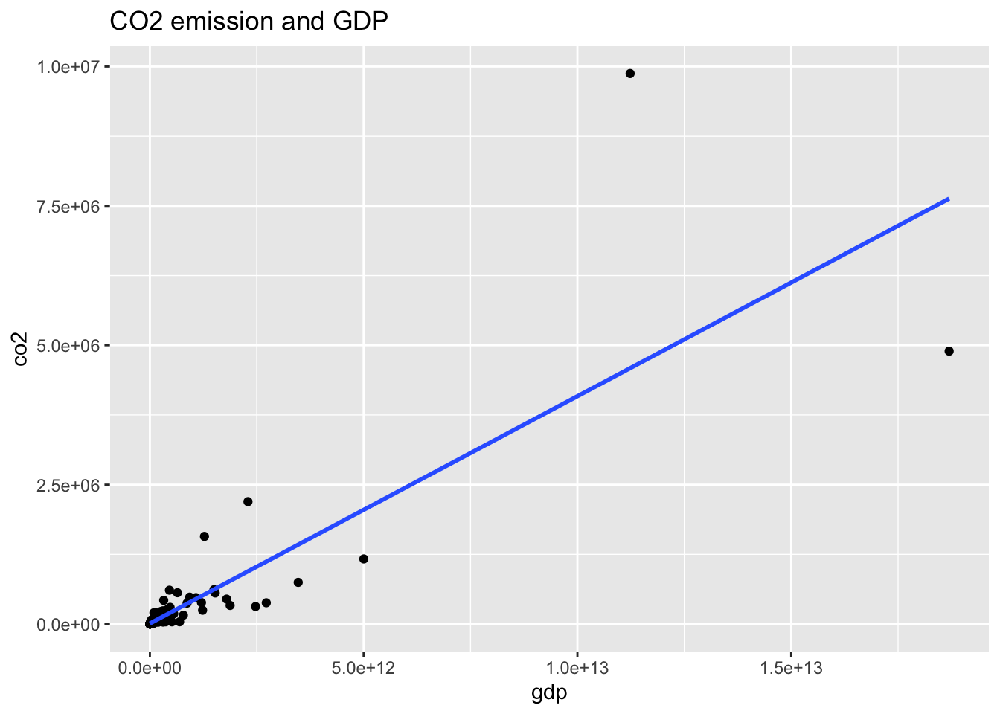
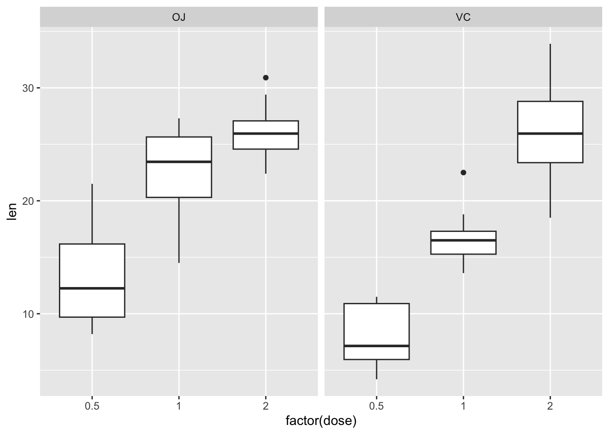

Chapter 9 Regression 3: CO2 emission (Standardization)
- Prof. Kaizoji provided a data in csv format in Moodle and use scale function to standardize the data, let us proceed one step by one step.
- He starts with a WDI data in 2016 and use the aggregated part. There may be arguments on the set of data, let us use the same one.
- He defines variance in his slides, and the codes below uses unbiased variance. The difference is minor.
wb_co2## # A tibble: 16,226 × 16
## iso2c country year status lastu…¹ co2 gdp pop cereal iso3c region
## <chr> <chr> <int> <chr> <chr> <dbl> <dbl> <dbl> <dbl> <chr> <chr>
## 1 1A Arab W… 1963 "" 2022-0… NA NA 1.00e8 1.83e7 ARB Aggre…
## 2 1A Arab W… 1960 "" 2022-0… NA NA 9.22e7 NA ARB Aggre…
## 3 1A Arab W… 1971 "" 2022-0… NA 4.98e10 1.25e8 1.70e7 ARB Aggre…
## 4 1A Arab W… 1972 "" 2022-0… NA 5.94e10 1.29e8 1.88e7 ARB Aggre…
## 5 1A Arab W… 1961 "" 2022-0… NA NA 9.47e7 1.67e7 ARB Aggre…
## 6 1A Arab W… 1962 "" 2022-0… NA NA 9.73e7 1.73e7 ARB Aggre…
## 7 1A Arab W… 1975 "" 2022-0… NA 1.58e11 1.40e8 1.87e7 ARB Aggre…
## 8 1A Arab W… 1976 "" 2022-0… NA 1.97e11 1.44e8 2.01e7 ARB Aggre…
## 9 1A Arab W… 1973 "" 2022-0… NA 7.53e10 1.32e8 1.78e7 ARB Aggre…
## 10 1A Arab W… 1974 "" 2022-0… NA 1.43e11 1.36e8 1.84e7 ARB Aggre…
## # … with 16,216 more rows, 5 more variables: capital <chr>, longitude <chr>,
## # latitude <chr>, income <chr>, lending <chr>, and abbreviated variable name
## # ¹lastupdatedco2_ag16 <- wb_co2 %>% filter(year == 2016, region=="Aggregates") %>%
select(iso2c, co2, gdp, pop, cereal) %>% drop_na()
co2_ag16## # A tibble: 46 × 5
## iso2c co2 gdp pop cereal
## <chr> <dbl> <dbl> <dbl> <dbl>
## 1 1A 1838603. 2.50e12 404042892 29526231
## 2 1W 33018556. 7.65e13 7433650819 728520338
## 3 4E 11308839. 1.36e13 2062250022 159822459
## 4 7E 2784816. 2.78e12 392836210 97557116
## 5 8S 2491070. 3.01e12 1771187426 132268829
## 6 B8 655580. 1.32e12 102994278 22398322
## 7 EU 2905110. 1.39e13 445487730 54059754
## 8 F1 694941. 1.55e12 881938038 110301901
## 9 OE 11968660. 4.84e13 1341783391 165276397
## 10 S1 229110. 4.45e11 39198032 1700592
## # … with 36 more rowsco2_al16_std <- co2_ag16 %>% mutate(st_co2 = (co2 - mean(co2))/sd(co2),
st_gdp = (gdp - mean(gdp))/sd(gdp),
st_pop = (pop - mean(pop))/sd(pop),
st_cereal = (cereal - mean(cereal))/sd(cereal))
co2_al16_std## # A tibble: 46 × 9
## iso2c co2 gdp pop cereal st_co2 st_gdp st_pop st_cereal
## <chr> <dbl> <dbl> <dbl> <dbl> <dbl> <dbl> <dbl> <dbl>
## 1 1A 1838603. 2.50e12 404042892 29526231 -0.534 -0.569 -0.633 -0.735
## 2 1W 33018556. 7.65e13 7433650819 728520338 3.55 3.93 3.28 3.50
## 3 4E 11308839. 1.36e13 2062250022 159822459 0.706 0.106 0.291 0.0552
## 4 7E 2784816. 2.78e12 392836210 97557116 -0.410 -0.552 -0.640 -0.322
## 5 8S 2491070. 3.01e12 1771187426 132268829 -0.448 -0.538 0.128 -0.112
## 6 B8 655580. 1.32e12 102994278 22398322 -0.689 -0.641 -0.801 -0.778
## 7 EU 2905110. 1.39e13 445487730 54059754 -0.394 0.123 -0.610 -0.586
## 8 F1 694941. 1.55e12 881938038 110301901 -0.683 -0.627 -0.367 -0.245
## 9 OE 11968660. 4.84e13 1341783391 165276397 0.792 2.22 -0.111 0.0882
## 10 S1 229110. 4.45e11 39198032 1700592 -0.744 -0.694 -0.837 -0.903
## # … with 36 more rowsco2_al16_scaled <- co2_ag16 %>% mutate(st_co2 = scale(co2),
st_gdp = scale(gdp),
st_pop = scale(pop),
st_cereal = scale(cereal))
co2_al16_scaled ## # A tibble: 46 × 9
## iso2c co2 gdp pop cereal st_co2…¹ st_gd…² st_po…³ st_ce…⁴
## <chr> <dbl> <dbl> <dbl> <dbl> <dbl> <dbl> <dbl> <dbl>
## 1 1A 1838603. 2.50e12 404042892 29526231 -0.534 -0.569 -0.633 -0.735
## 2 1W 33018556. 7.65e13 7433650819 728520338 3.55 3.93 3.28 3.50
## 3 4E 11308839. 1.36e13 2062250022 159822459 0.706 0.106 0.291 0.0552
## 4 7E 2784816. 2.78e12 392836210 97557116 -0.410 -0.552 -0.640 -0.322
## 5 8S 2491070. 3.01e12 1771187426 132268829 -0.448 -0.538 0.128 -0.112
## 6 B8 655580. 1.32e12 102994278 22398322 -0.689 -0.641 -0.801 -0.778
## 7 EU 2905110. 1.39e13 445487730 54059754 -0.394 0.123 -0.610 -0.586
## 8 F1 694941. 1.55e12 881938038 110301901 -0.683 -0.627 -0.367 -0.245
## 9 OE 11968660. 4.84e13 1341783391 165276397 0.792 2.22 -0.111 0.0882
## 10 S1 229110. 4.45e11 39198032 1700592 -0.744 -0.694 -0.837 -0.903
## # … with 36 more rows, and abbreviated variable names ¹st_co2[,1], ²st_gdp[,1],
## # ³st_pop[,1], ⁴st_cereal[,1]co2_ag16 %>% select(-1) %>% scale() %>% as_tibble()## # A tibble: 46 × 4
## co2 gdp pop cereal
## <dbl> <dbl> <dbl> <dbl>
## 1 -0.534 -0.569 -0.633 -0.735
## 2 3.55 3.93 3.28 3.50
## 3 0.706 0.106 0.291 0.0552
## 4 -0.410 -0.552 -0.640 -0.322
## 5 -0.448 -0.538 0.128 -0.112
## 6 -0.689 -0.641 -0.801 -0.778
## 7 -0.394 0.123 -0.610 -0.586
## 8 -0.683 -0.627 -0.367 -0.245
## 9 0.792 2.22 -0.111 0.0882
## 10 -0.744 -0.694 -0.837 -0.903
## # … with 36 more rowsco2_ag16_rv <- read_csv("data/AGCO2rv.csv") ## Rows: 44 Columns: 4
## ── Column specification ────────────────────────────────────────────────────────
## Delimiter: ","
## dbl (4): EN.ATM.CO2E.KT, NY.GDP.MKTP.CD, SP.POP.TOTL, AG.LND.CREL.HA
##
## ℹ Use `spec()` to retrieve the full column specification for this data.
## ℹ Specify the column types or set `show_col_types = FALSE` to quiet this message.co2_ag16_rv## # A tibble: 44 × 4
## EN.ATM.CO2E.KT NY.GDP.MKTP.CD SP.POP.TOTL AG.LND.CREL.HA
## <dbl> <dbl> <dbl> <dbl>
## 1 1846601. 2.40e12 404042892 29143572
## 2 32940650. 7.63e13 7433569330 733367261
## 3 11254611. 1.36e13 2062232304 163412028
## 4 2837305. 2.97e12 412538477 104861504
## 5 2479230 2.93e12 1771187426 132269014
## 6 656330 1.32e12 102994278 22398321
## 7 2904100 1.39e13 445487730 54059756
## 8 733332. 1.41e12 849739853 95574606
## 9 11961830 4.84e13 1341701902 165097397
## 10 228009. 4.45e11 39198032 1809678
## # … with 34 more rowscolnames(co2_ag16_rv) <- c("st_co2", "st_gdp", "st_pop", "st_cereal")
co2_ag16_rv## # A tibble: 44 × 4
## st_co2 st_gdp st_pop st_cereal
## <dbl> <dbl> <dbl> <dbl>
## 1 1846601. 2.40e12 404042892 29143572
## 2 32940650. 7.63e13 7433569330 733367261
## 3 11254611. 1.36e13 2062232304 163412028
## 4 2837305. 2.97e12 412538477 104861504
## 5 2479230 2.93e12 1771187426 132269014
## 6 656330 1.32e12 102994278 22398321
## 7 2904100 1.39e13 445487730 54059756
## 8 733332. 1.41e12 849739853 95574606
## 9 11961830 4.84e13 1341701902 165097397
## 10 228009. 4.45e11 39198032 1809678
## # … with 34 more rows9.1 Regression
co2_al16_scaled %>% ggplot(aes(st_gdp, st_co2)) + geom_point() +
geom_smooth(method = "lm", se = FALSE) +
labs(title = "CO2 emission and GDP: Standardized")## `geom_smooth()` using formula 'y ~ x'
co2_al16_scaled %>% ggplot(aes(st_pop, st_co2)) + geom_point() +
geom_smooth(method = "lm", se = FALSE) +
labs(title = "CO2 emission and Population: Standardized")## `geom_smooth()` using formula 'y ~ x'
co2_al16_scaled %>% ggplot(aes(st_cereal, st_co2)) + geom_point() +
geom_smooth(method = "lm", se = FALSE) +
labs(title = "CO2 emission and Land under cereal production: Standardized")## `geom_smooth()` using formula 'y ~ x'
st_co2_gdp <- co2_al16_scaled %>% lm(st_co2 ~ st_gdp, .)
st_co2_pop <- co2_al16_scaled %>% lm(st_co2 ~ st_pop, .)
st_co2_cereal <- co2_al16_scaled %>% lm(st_co2 ~ st_cereal, .)
st_co2_gdp_pop <- co2_al16_scaled %>% lm(st_co2 ~ st_gdp + st_pop, .)
st_co2_gdp_cereal <- co2_al16_scaled %>% lm(st_co2 ~ st_gdp + st_cereal, .)
st_co2_pop_cereal <- co2_al16_scaled %>% lm(st_co2 ~ st_pop + st_cereal, .)
st_co2_all <- co2_al16_scaled %>% lm(st_co2 ~ st_gdp + st_pop + st_cereal, .)msummary(list(st_gdp = st_co2_gdp, st_pop = st_co2_pop, st_cereal = st_co2_cereal, st_gdp_pop = st_co2_gdp_pop, st_gdp_cereal = st_co2_gdp_cereal, st_pop_cereal = st_co2_pop_cereal, st_all = st_co2_all))| st_gdp | st_pop | st_cereal | st_gdp_pop | st_gdp_cereal | st_pop_cereal | st_all | |
|---|---|---|---|---|---|---|---|
| (Intercept) | 0.000 | 0.000 | 0.000 | 0.000 | 0.000 | 0.000 | 0.000 |
| (0.077) | (0.069) | (0.064) | (0.040) | (0.043) | (0.065) | (0.040) | |
| st_gdp | 0.856 | 0.492 | 0.445 | 0.502 | |||
| (0.078) | (0.052) | (0.059) | (0.060) | ||||
| st_pop | 0.886 | 0.575 | −0.182 | 0.658 | |||
| (0.070) | (0.052) | (0.396) | (0.267) | ||||
| st_cereal | 0.903 | 0.597 | 1.083 | −0.090 | |||
| (0.065) | (0.059) | (0.396) | (0.284) | ||||
| Num.Obs. | 46 | 46 | 46 | 46 | 46 | 46 | 46 |
| R2 | 0.732 | 0.785 | 0.816 | 0.930 | 0.920 | 0.817 | 0.931 |
| R2 Adj. | 0.726 | 0.780 | 0.812 | 0.927 | 0.917 | 0.808 | 0.926 |
| AIC | 74.9 | 64.8 | 57.7 | 15.0 | 21.1 | 59.5 | 16.8 |
| BIC | 80.4 | 70.3 | 63.2 | 22.3 | 28.4 | 66.8 | 26.0 |
| Log.Lik. | −34.464 | −29.421 | −25.850 | −3.475 | −6.531 | −25.738 | −3.420 |
| RMSE | 0.51 | 0.46 | 0.42 | 0.26 | 0.28 | 0.42 | 0.26 |
vif(st_co2_gdp_pop)## st_gdp st_pop
## 1.666151 1.666151vif(st_co2_gdp_cereal)## st_gdp st_cereal
## 1.894477 1.894477vif(st_co2_pop_cereal)## st_pop st_cereal
## 36.8198 36.8198vif(st_co2_all)## st_gdp st_pop st_cereal
## 2.213042 43.011208 48.9053609.2 Not Standardized
co2_al16 <- wb_co2 %>% filter(region != "Aggregates", year == 2016)
co2_al16## # A tibble: 216 × 16
## iso2c country year status lastu…¹ co2 gdp pop cereal iso3c
## <chr> <chr> <int> <chr> <chr> <dbl> <dbl> <dbl> <dbl> <chr>
## 1 AD Andorra 2016 "" 2022-0… 470. 2.90e 9 7.73e4 NA AND
## 2 AE United Arab … 2016 "" 2022-0… 201080. 3.57e11 9.36e6 1.79e2 ARE
## 3 AF Afghanistan 2016 "" 2022-0… 5300. 1.81e10 3.54e7 2.79e6 AFG
## 4 AG Antigua and … 2016 "" 2022-0… 500 1.44e 9 9.45e4 3.5 e1 ATG
## 5 AL Albania 2016 "" 2022-0… 4480. 1.19e10 2.88e6 1.48e5 ALB
## 6 AM Armenia 2016 "" 2022-0… 5070. 1.05e10 2.94e6 1.95e5 ARM
## 7 AO Angola 2016 "" 2022-0… 29760. 4.98e10 2.88e7 2.73e6 AGO
## 8 AR Argentina 2016 "" 2022-0… 183160. 5.58e11 4.36e7 1.18e7 ARG
## 9 AS American Sam… 2016 "" 2022-0… NA 6.71e 8 5.57e4 NA ASM
## 10 AT Austria 2016 "" 2022-0… 63680. 3.96e11 8.74e6 7.87e5 AUT
## # … with 206 more rows, 6 more variables: region <chr>, capital <chr>,
## # longitude <chr>, latitude <chr>, income <chr>, lending <chr>, and
## # abbreviated variable name ¹lastupdated9.3 Regression
co2_al16 %>% ggplot(aes(gdp, co2)) + geom_point() +
geom_smooth(method = "lm", se = FALSE) +
labs(title = "CO2 emission and GDP")## `geom_smooth()` using formula 'y ~ x'## Warning: Removed 30 rows containing non-finite values (stat_smooth).## Warning: Removed 30 rows containing missing values (geom_point).
co2_al16 %>% ggplot(aes(pop, co2)) + geom_point() +
geom_smooth(method = "lm", se = FALSE) +
labs(title = "CO2 emission and Population")## `geom_smooth()` using formula 'y ~ x'## Warning: Removed 27 rows containing non-finite values (stat_smooth).## Warning: Removed 27 rows containing missing values (geom_point).
co2_al16 %>% ggplot(aes(cereal, co2)) + geom_point() +
geom_smooth(method = "lm", se = FALSE) +
labs(title = "CO2 emission and Land under cereal production")## `geom_smooth()` using formula 'y ~ x'## Warning: Removed 41 rows containing non-finite values (stat_smooth).## Warning: Removed 41 rows containing missing values (geom_point).
orig_co2_gdp <- wb_co2_18 %>% lm(co2 ~ gdp, .)
orig_co2_pop <- wb_co2_18 %>% lm(co2 ~ pop, .)
orig_co2_cereal <- wb_co2_18 %>% lm(co2 ~ cereal, .)
orig_co2_gdp_pop <- wb_co2_18 %>% lm(co2 ~ gdp + pop, .)
orig_co2_gdp_cereal <- wb_co2_18 %>% lm(co2 ~ gdp + cereal, .)
orig_co2_pop_cereal <- wb_co2_18 %>% lm(co2 ~ pop + cereal, .)
orig_co2_all <- wb_co2_18 %>% lm(co2 ~ gdp + pop + cereal, .)msummary(list(orog_gdp = orig_co2_gdp, orig_pop = orig_co2_pop, orig_cereal = orig_co2_cereal, orig_gdp_pop = orig_co2_gdp_pop, orig_gdp_cereal = orig_co2_gdp_cereal, orig_pop_cereal = orig_co2_pop_cereal, orig_all = orig_co2_all))| orog_gdp | orig_pop | orig_cereal | orig_gdp_pop | orig_gdp_cereal | orig_pop_cereal | orig_all | |
|---|---|---|---|---|---|---|---|
| (Intercept) | 3515.953 | −15951.506 | −63228.012 | −55340.997 | −73957.970 | −52752.510 | −55825.130 |
| (35988.776) | (38195.903) | (40611.145) | (24242.415) | (30130.231) | (40260.650) | (26764.555) | |
| gdp | 0.000 | 0.000 | 0.000 | 0.000 | |||
| (0.000) | (0.000) | (0.000) | (0.000) | ||||
| pop | 0.005 | 0.003 | 0.002 | 0.003 | |||
| (0.000) | (0.000) | (0.001) | (0.000) | ||||
| cereal | 0.062 | 0.036 | 0.039 | −0.005 | |||
| (0.003) | (0.003) | (0.009) | (0.007) | ||||
| Num.Obs. | 186 | 189 | 176 | 186 | 172 | 175 | 172 |
| R2 | 0.708 | 0.666 | 0.684 | 0.871 | 0.835 | 0.697 | 0.872 |
| R2 Adj. | 0.706 | 0.664 | 0.682 | 0.870 | 0.833 | 0.694 | 0.870 |
| AIC | 5396.1 | 5505.5 | 5129.4 | 5245.3 | 4906.9 | 5095.6 | 4865.5 |
| BIC | 5405.8 | 5515.2 | 5138.9 | 5258.2 | 4919.5 | 5108.2 | 4881.2 |
| Log.Lik. | −2695.047 | −2749.741 | −2561.711 | −2618.668 | −2449.437 | −2543.785 | −2427.731 |
| RMSE | 474757.79 | 503810.82 | 506985.87 | 314872.13 | 370265.90 | 497313.02 | 326367.04 |
vif(orig_co2_gdp_pop)## gdp pop
## 1.498289 1.498289vif(orig_co2_gdp_cereal)## gdp cereal
## 1.795285 1.795285vif(orig_co2_pop_cereal)## pop cereal
## 8.098126 8.098126vif(orig_co2_all)## gdp pop cereal
## 1.859018 8.401085 10.1011369.3.1 Standadized (Again)
msummary(list(st_gdp = st_co2_gdp, st_pop = st_co2_pop, st_cereal = st_co2_cereal, st_gdp_pop = st_co2_gdp_pop, st_gdp_cereal = st_co2_gdp_cereal, st_pop_cereal = st_co2_pop_cereal, st_all = st_co2_all))| st_gdp | st_pop | st_cereal | st_gdp_pop | st_gdp_cereal | st_pop_cereal | st_all | |
|---|---|---|---|---|---|---|---|
| (Intercept) | 0.000 | 0.000 | 0.000 | 0.000 | 0.000 | 0.000 | 0.000 |
| (0.077) | (0.069) | (0.064) | (0.040) | (0.043) | (0.065) | (0.040) | |
| st_gdp | 0.856 | 0.492 | 0.445 | 0.502 | |||
| (0.078) | (0.052) | (0.059) | (0.060) | ||||
| st_pop | 0.886 | 0.575 | −0.182 | 0.658 | |||
| (0.070) | (0.052) | (0.396) | (0.267) | ||||
| st_cereal | 0.903 | 0.597 | 1.083 | −0.090 | |||
| (0.065) | (0.059) | (0.396) | (0.284) | ||||
| Num.Obs. | 46 | 46 | 46 | 46 | 46 | 46 | 46 |
| R2 | 0.732 | 0.785 | 0.816 | 0.930 | 0.920 | 0.817 | 0.931 |
| R2 Adj. | 0.726 | 0.780 | 0.812 | 0.927 | 0.917 | 0.808 | 0.926 |
| AIC | 74.9 | 64.8 | 57.7 | 15.0 | 21.1 | 59.5 | 16.8 |
| BIC | 80.4 | 70.3 | 63.2 | 22.3 | 28.4 | 66.8 | 26.0 |
| Log.Lik. | −34.464 | −29.421 | −25.850 | −3.475 | −6.531 | −25.738 | −3.420 |
| RMSE | 0.51 | 0.46 | 0.42 | 0.26 | 0.28 | 0.42 | 0.26 |
vif(st_co2_gdp_pop)## st_gdp st_pop
## 1.666151 1.666151vif(st_co2_gdp_cereal)## st_gdp st_cereal
## 1.894477 1.894477vif(st_co2_pop_cereal)## st_pop st_cereal
## 36.8198 36.8198vif(st_co2_all)## st_gdp st_pop st_cereal
## 2.213042 43.011208 48.905360